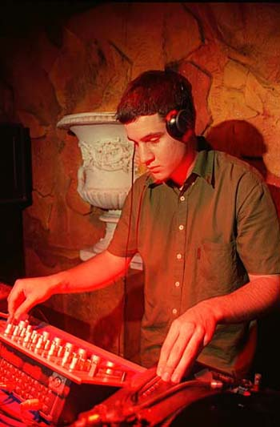

| | name // |
elle rollo, Guest Alchemist (SBS Radio).
| | creator // |
elle rollo
| | project // | SBS
| |
I want people to realise that Drum & Bass isn't just dark and dangerous.
I want to spread the good vibes. I am very happy to think that everyone who tunes in will hear something they have never heard before. You can expect to hear Drum & Bass!!! Vocals, bubblin' b-lines, steppin' beats. MUSIC.......
My favourite track of the moment is something I dont have......CALIBRE'S LP "Musique Concrete".......I am feeling stuff from artist like Intalex & ST Files, Shy Fx, Full Cycle crew, Carlito & Addiction, Futurecut, Influx Datum, High Contrast, SP Collective, Matrix and local producers like Greg Packer, Adrian Sardi & B Jam. There are so many good tunes around!!
Favourite DJs are Fabio, Randall, Zinc, Storm, Craze, Cut Chemist & the Scratch Perverts.
My tip: enter something like this noise Mix Up project for fun.........it is purely about playing music you love.
I would like to send thanks to everyone involved in making the noise festival possible. Also big thanks to Adrian Sardi @ Vault Studio's for mastering my mix, plus i wanna give a shout to my family & friends, Concept, Onkie, Greg Packer, Lady K, Mike L, Clay, Muller, Diamond D, B Jam, Dr Decks, Mystique, Frantik and all the people supporting DnB in Perth.
elle rollo is one of noise and SBS Radio's talented guest Alchemists. During October tune into Alchemy, something different, at 11pm to midnight, 6 nights a week (Saturday to Thursday) and on 6am to 7am (Saturday and Sunday).
For more information on what noise is on SBS, go to the noise link on sbs.com.au
| | date completed // |
20/Sep/2001
| | the file // |

| | file size // |
36354 bytes
|
|
|